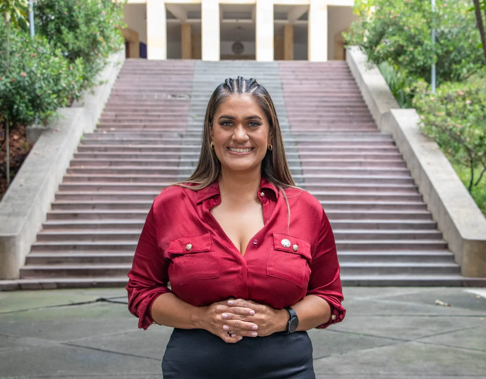
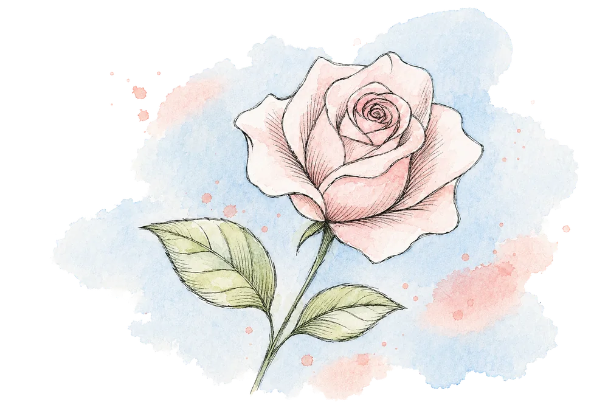
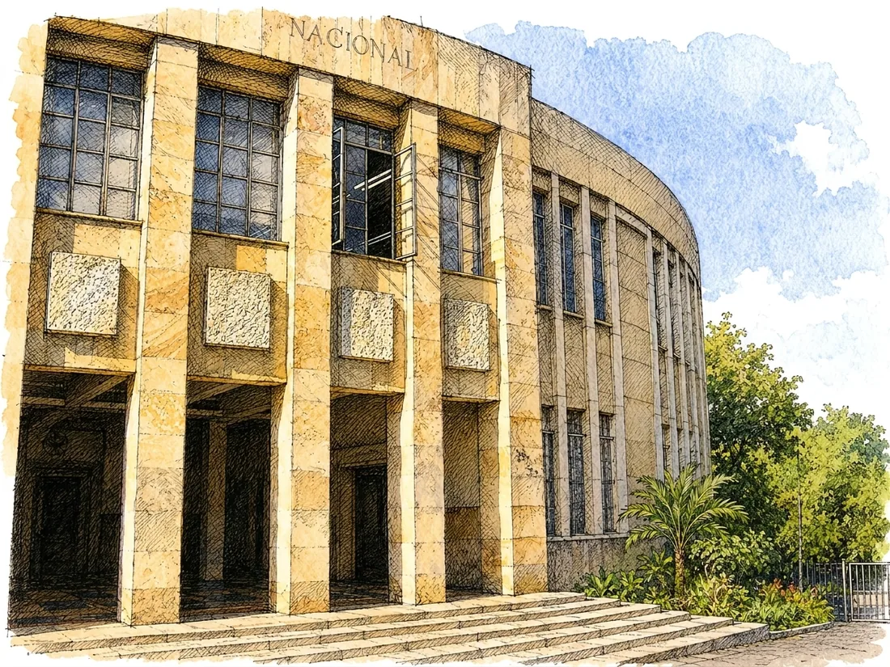
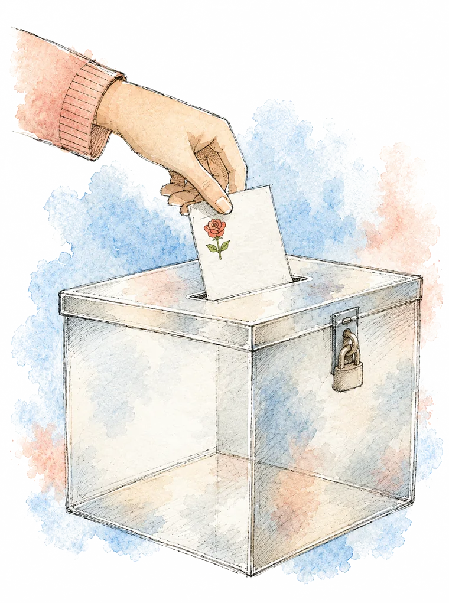

La profesora
Creó Minas Contigo en 2022 y lo fortaleció de dos a cuatro asignaturas.
Candidata a la Decanatura de la Facultad de Minas. Dos años de resultados que puedes verificar y una propuesta para que lo mejor esté por venir.


Una carta a la comunidad
Una Facultad se mide por lo que hace posible en la vida de quienes la integran.
Empezamos este bienio con una convicción sencilla: los recursos, los convenios, los laboratorios y los reconocimientos son medios, nunca fines. Con ese criterio priorizamos el gasto, abrimos las convocatorias y decidimos dónde poner el esfuerzo.
El primer compromiso fue que ningún estudiante quede por fuera por razones que la Facultad puede evitar. Minas Contigo, creado en 2022, se fortaleció hasta cubrir cuatro asignaturas y solo en 2025 acompañó a 901 estudiantes.
A ese acompañamiento se sumaron la Escuela de Familias, con 110 familias vinculadas, y el diseño de SAMyR, nuestro sistema de alerta temprana, cuya propuesta quedó lista para desarrollo. Y porque permanecer también cuesta dinero, 197 becas de posgrado exoneraron $1.682,5 millones en derechos académicos y servimos 5.851 almuerzos subsidiados.
Con el profesorado nos propusimos ampliar su capacidad de investigar. Creamos 20 proyectos de investigación con financiación externa por $26.555 millones y acompañamos a 123 docentes —el 69% de la planta— en 254 proyectos activos.
Con los egresados quisimos sostener un vínculo real y no ceremonial. La Facultad contrató a 390 de ellos, caracterizamos 160 empresas y emprendimientos creados por egresados y 266 aportaron los recursos con los que se adquirieron 255 pines de admisión para jóvenes de colegios públicos.
Enseñar e investigar exige espacios y equipos a la altura. Pusimos en marcha un plan de $4.286 millones en cuatro frentes de infraestructura, renovamos el Laboratorio de Termodinámica y comenzó la intervención de las salas de estudio del Bloque M9.
De ese mismo propósito nació la estrategia de internacionalización: con el CSIC de España abrimos una convocatoria conjunta; en OPTIMALMINE somos la única universidad latinoamericana del consorcio; y la Facultad coadministra cerca de $2.200 millones para la movilidad de investigadores.
Ninguna de estas cifras es una afirmación aislada: cada una corresponde a una actividad registrada y puede rastrearse hasta el proyecto que la produjo.
Eva Cristina Manotas Rodríguez
Decana · Facultad de Minas · Universidad Nacional de Colombia, Sede Medellín

Quién es
Profesora de la Facultad de Minas y su decana durante el bienio 2024–2026. Su forma de administrar se resume en una imagen que la comunidad conoce bien: una Decanatura a la que se entra sin antesala.
Creó Minas Contigo en 2022 y lo fortaleció de dos a cuatro asignaturas.
Condujo 31 proyectos con responsable, meta y avance publicados en un tablero abierto.
Convirtió la equidad y la inclusión en presupuesto, presencia y acompañamiento.
El recorrido
Lo que hicimos · 2024–2026
estudiantes acompañados por Minas Contigo en el bienio.
en 20 proyectos de investigación con financiación externa.
de los programas académicos acreditados en alta calidad.
gestionados con aliados internacionales.
becas de posgrado y más de $1.680 millones exonerados.
botellas plásticas evitadas con la red de bebederos.
No nos lo creas: verifícalo. Cada cifra vive en el tablero público del Plan de Acción, proyecto por proyecto, con responsable, meta y avance.
La propuesta · 2026–2028
Gestiones ya sembradas en este bienio que el próximo verá florecer.
Cerca de $400 millones ya asegurados para convertirlo en un mejor espacio para estudiantes y comunidad académica.
El sistema de alerta temprana para detectar a tiempo a quien está en riesgo de abandonar.
Una apuesta por inteligencia artificial, nube y computación cuántica para la transformación tecnológica.
La armonización de los posgrados como plataforma de proyección internacional.
Cómo votar
Consulta electrónica · jueves 17 de septiembre de 2026 · Participa UNAL
Ingresa ese día a Participa UNAL con tu usuario institucional.
Busca la consulta de Decanatura · Facultad de Minas.
Marca la plancha #4 — Eva Cristina Manotas Rodríguez.
